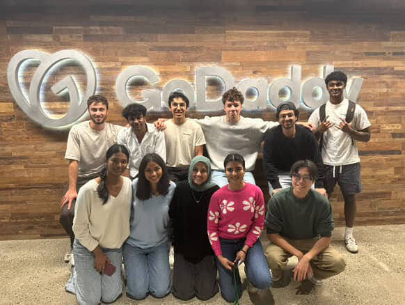

GoDaddy
My projects at GoDaddy:
Yara Transpiler: Worked on the security team to develop an LLM-powered custom reasoning model to transpile 500+ unformatted malware signatures and malicious files into robust, industry standard YARA rules. Worked with security engineers to drop manual review process by approximately 30%.
Ops Review Automation Worked on the SRE team to build client libraries for querying their Grafana and Kibana dashboards. Built end to end pipelines to automatically ingest over 1000+ metrics weekly into ServiceNow, reducing manual import time by 52%.